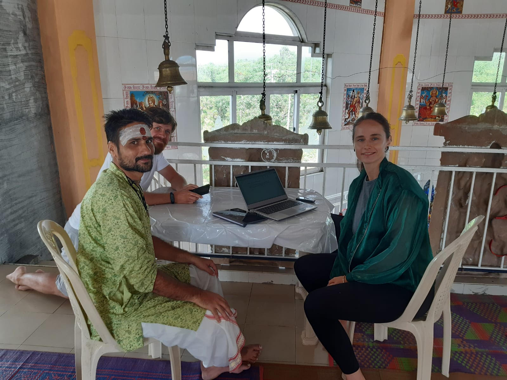

Home
About
Research
In Media
Popularisation
Research & Publications

LEVYNA Profile & Lab Page
Google Scholar Profile
ResearchGate Profile
Dissertation Announcement (2024)
"Sensing ghosts and other dangerous beings" (2024)
"Revisiting feeling of threat and agency detection" (2025)